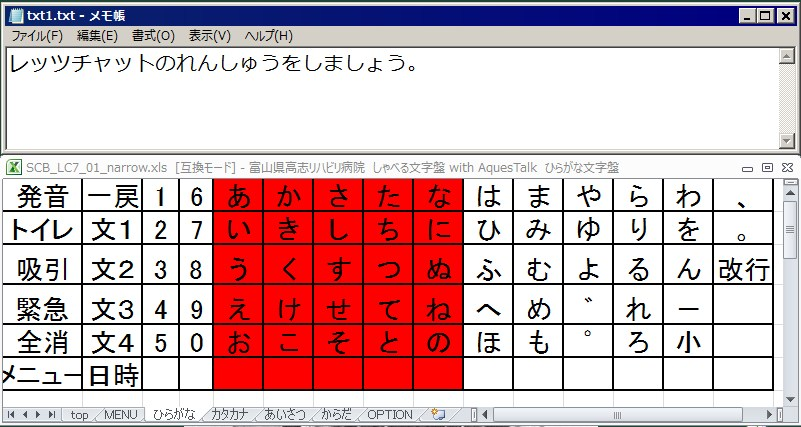
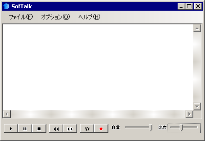
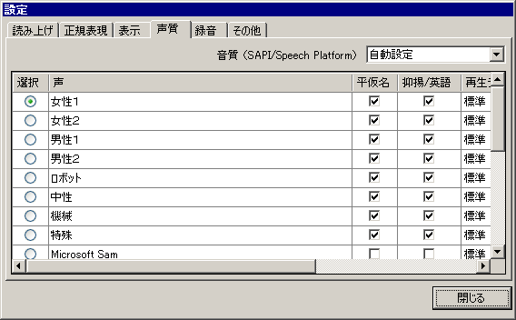
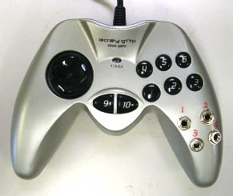

か
ならずお読みください→
レッツチャット練習用 しゃべる文字盤
Windows7対応版
レッツチャットはファンコム株式会社（2010年6月営業終了）ならびに
パナソニックヘルスケア株式会社の商品です。Microsoft Excel for communication aids

コミュニケーションエイドが必要かな？とお考えの方には、実際の道具を生活の場面で試してみることを強くお勧めしております。
カタログを読めば、道具のはたらきを一通り知ることができます。しかしその道具を使ったら自分と周囲の人とのコミュニケーションがどんなふうになるのか、 そして自分たちの生活がどうなるのかを想像するのはなかなか簡単ではありません。
何しろコミュニケーションは人間の心を映す鏡のようなものです。展示会を見学に来ている人にとって機械から声が出て文字がでればそれで十分結構でしょう が、様々な事情で厳しい現実に直面している皆さんには、声や文字が伝わるだけでなく、周囲の方々と気持や思いなども通じ合いそしてわかり合え、こころの重 荷が軽くなるところまでいっていただきたいものと思います。そのためにも生活の場面で、実際の道具を使い、実践的な練習が大切になります。これは単にことばがご不自由なご本人が、道具 を操作して言葉を送り出すだけではなく、生活の場面で会話の相手となる方がその言葉を受け取りそれに返答する、それにまた道具を使って返事をするといった 具合に、まわりの何人かの間でうまく言葉をやったりとったりする練習に関係する皆さんで取り組んでいただきたいと思います。
さて、練習するには道具が必要です。比較的高価な道具ですのでレンタルなど貸し出し制度があると経済的に助かります。当院で も、テクノエイドルーム（ http://www.koshi-rehabili.or.jp/data/shien/t-room.html ） を設けていろいろな福祉機器を貸し出しています。その中には『伝の心』や『レッツチャット』のようなコミュニケーションエイド機器もあります。大変人気があり引き合いもた くさんあります。富山県内の４カ所の厚生センターにも貸し出し用レッツチャットがありますが、これらもよく貸し出されるそうです。
最近は神経難病の患者さんがテレビや新聞などのマスコミで紹介されることも増えました。このため、コミュニケーションエイド の存在も徐々に知られるようになってきました。こういった事情で取り組んでみようかと思う方が増えているのでしょうか。福祉機器が世の中に広く知られ、利 用されることはこれはこれで大変喜ばしいことと思います。
さて困ったことになりました。貸し出し品が少なく貸し出し希望が多いとき、普通は貸し出し日数を短くして多くの方に次々に回 るようにしたいところですが、このコミュニケーションエイドという道具は、『あとがつかえていますので、お早くお願いします』とはなかなかいきません。
このような理由で『レッツチャット練習用 しゃべる文字盤』を作りました。(2011年2月)そして、このたび Windows7対応版を作りました。（2012年8月）
これを使って、2010年夏に生産中止された、二代目レッツチャットの操作練習や体験のための試用が、エクセルが入っている Windowsパソコンを使ってできます。レッツチャット貸し出し品の順番がなかなか回ってこない、貸出期間が短いなどでお困りといった問題を、手近にあ るWindowsパソコンで解決できるかもしれません。
『しゃべる文字盤』は文字盤表示にエクセルを使い、文章表示にはメモ帳を使っています。文字盤の配置やデザインなどに違いが ありますが、レッツチャットをはじめとしたコミュニケーションエイドの体験用や練習用として役に立つと考えます。レッツチャットとの機能の違いは次の通り です。
- ワイヤレスコールなど外部呼び出しができません。ブザーもありません。
またWindowsパソコンを使いますので次のような違いもあります。
その他、『レッツチャット練習用しゃべる文字盤』の特徴は以下のようになります。
Aquest社のAquesTalkのインストール方法
『 レッツチャット練習用 しゃべる文字盤 』で人工音声を使用するためには、AquesTalkのパソコンへのインストールが必要です。
AquesTalkについて、詳しくは解説はこちらをご覧ください http://www.a-quest.com/products/aquestalk.html
2011年2月14日にAquest社の上記サイトがリニューアルされました。これに伴い上記のダウンロードサイトで入手で きるのは、発声に制限がある評価版のみになりました。これでは困りますので、以前に配布されていたものと同じものを下記からダウンロードできるようにしま した。
Window用 AquesTalk （aqtk_mv_20090609.zip 1.1MB）
これはZIP形式の圧縮ファイルです。使用する前に解凍しなければなりません。解凍にはLhasa などを使います。 （窓の杜、Lhasaのページはこちら） その他、WindowsXPの正規ユーザならば、マイクロソフト純正の解凍ソフトが使えるそうです。 （窓の杜、ＮＥＷＳはこちら）
上のファイルを解凍すると、AquesTalk_mvという名前のフォルダできます。その中には、binという名のフォルダ とAqLicense.txt と、readme_mv.txt の２つのファイルがあります。readme_mv.txt には、フォルダbinの中に ある８つのフォルダと８種類の声について説明がありますのでお読み下さい。しゃべる文字盤のためにAquesTalkをインストールするには、この中の声 を選んで、該当するAquesTalkDa.dll（8種類の声のいずれも、ファイルネームは、AquesTalkDa.dllで同じです）をシステム フォルダ（WindowsXpの場合は、c:\windows\system32、Windows７の場合は、c:\windows\sysWOW64） へコピーします。
この部分の説明はわざとあっさり簡単に書きました。もしこの文章を何回か読んでもよく理解できない場合には手助けが必要です。ご自分でむりをせず、どなたかに助けを求める ことをお勧めします。この作業はある程度パソコンをあつかいなれた人にとってごく簡単な作業で、特に専門知識を必要とするものでもありません。このような 人はこの先、今回のようなハードルを越える際にもあなたの助けになるでしょう。こんな『助っ人』をみつけることは今後も大切なことです。（もしかしてコ ミュニケーションエイドより大切かもしれません）
ご家族やご友人やお知り合いで、どなたか助けが見つかるといいですね。（中学生のお孫さんが手伝っている事例は、最近多いです。）『 レッツチャット練習用 しゃべる文字盤 』はアクエスト社の規則音声合成ライブラリを使用しており、その著作権は同社に帰属します。
Softalkのインストール
しゃべる文字盤は、作った文章を読み上げる際に、cnccさんがお作りになった、Softalkを使っています。
Softalkは、 http://www35.atwiki.jp/softalk/ から入手できます。ダウンロードしたファイルを解凍すると、Softalkという名前のフォルダができます。これを、c:\windows \program files にコピーしてください。
このフォルダ内のSoftalk.exeを起動してください。下の画面が表示されます。（下図はVer1.87の例です）右下の２つのスライダで声の音量 と速度を調整できます。（下図は当方での設定事例です）
オプション＞環境設定＞音質のタブをクリックで下の画面が表示され、ここで発声する声を選びます。上から８種類がAquesTalkの声です。上で選ん だ声と同じにすると普通ですが、普通でなければならない理由は特にありません。

しゃべる文字盤からSoftalkを非表示で起動しますので、設定変更はこのようにSoftalkを手動で起動し行なってください。
尚、Softalkを利用するには、Microsoft .NET Framework 2.0以上が必要です。Windows Vistaや７ではすでに入っていますので問題ありませんが、WindowsXPではインストールする必要があります。Microsoft .NET Framework 2.0は下記から入手できます。
文書ファイルの準備
『 レッツチャット練習用 しゃべる文字盤（Windows7対応版）』では『文１』～『文４』の４種類の文章を使えます。まずはじめに、パブリックなドキュメント、 c:\Users\Public\Documents に、4つのファイル、txt1.txt txt2.txt txt3.txt txt4.txt （それぞれ『文１』～『文4』に相当）を作ってください。しゃべる文字盤を開くと前回使用した文書を開きます。（初めての場合は文１）文章の選択を切り替 えたりしゃべる文字盤を終了すると上書き保存します。
『 レッツチャット練習用 しゃべる文字盤 Windows７対応版』の試作品はこちらからダウンロードできます。
方法、下記の青文字を『右クリック』→『対象をファイルに保存』でパソコンに保存できます。
『 レッツチャット練習用 しゃべる文字盤 Windows７対応版』 （SCB_LC7_02.xls）
このエクセルファイルの各ワークシートには保護をかけてありません。変更や改変はそのまま行ってください。
もし、いろいろやった結果、正常な動作をしなくなった場合は、再度ダウンロードしてください。
使い方
『 レッツチャット練習用 しゃべる文字盤 Windows7対応版』は、Windows7でもWindowsXpでも使用出来ます。当方では動作確認は Windows7（64bit）、Excel2010とWindowsXp（32bit）、Excel2000で行なっています。
エクセルの設定とファイルの起動時の操作
『 レッツチャット練習用 しゃべる文字盤 Windows7対応版』は、エクセルのマクロを使用しています。 使用前にエクセルの設定変更が必要です。
Excel2000の場合（Excel2003も同様）は、ツール＞マクロ＞セキュリティーでセキュリティーレベルを（中）にします。この設定で起動すると、マクロを有効 にするか聞いてきます。変更や改変などメンテナンス作業にはマクロを無効にするとやりやすいでしょう。マクロを有効にすると、「しゃべる文字盤でレッツ チャットの練習をしましょう」と発声し、使用可能な状態になります。
終了するには、ESCキーを押すか右上のXをクリックします。「しゃべる文字盤 おわります」と発声して終了します。メンテナンスする場合にはESCキー を使うと便利です。Excel2010の場合は、ファイル＞オプション＞セキュリティーセンター＞セキュリティーセンターの設定＞マクロの設定、と進みます。そこで、『警告を表示してすべて のマクロを無効にする。』を選びます。
この設定で、しゃべる文字盤などのマクロを含んだ、エクセルファイルを開くと、『セキュリティー警告 マクロが無効にされました コンテンツの有効化』と 表示されます。そこで、『コンテンツの有効化』の部分をクリックすると、マクロ使用可能になり、しゃべる文字盤が動作を開始します。また同じファイルを起 動しても、次回からはこの警告文は表示されません。
やれセキュリティー、マクロの無効、警告、などの語を散々表示する割には、最後のクリックひとつでマクロが有効になります。おまけに警告はこれっきり出ま せん。この部分に関してさらに詳しい説明をご希望の方は、
office TANAKA - Excel 2010レビュー[2回目からはマクロの警告しません
をごらんください。
さらに、OPTIONのワークシートでは、背景色、文字色、選択色、スキャン間隔、発声速度などが設定できます。
また、表示の寸法、セルの寸法、フォント（種類、大きさ等）は、マクロを無効にして起動して、ごく普通のエクセル操作と同様 な操作方法で変更可能です。
操作スイッチ
『レッツチャット練習用 しゃべる文字盤』は、キーボードのＦ９キーで操作するようにしました。お身体の不自由な方がキー ボードのＦ９キーをどうやって押すのだろう？と思われる方もおられるかもしれませんが、これには『伝統的な方法』があります。

この問題の解決にはパソコン用のゲームパッドとゲームパッド入力をキー入力に変換するソフトを使います。上の写真（右ににぎ り部分にスイッチプラグ挿入口を４つあります。これは試験用に作ったものです。）のようなゲームパッドはゲーム愛好者にはとてもポピュラーな道具です。家 電量販店では呆れるほど豊富な品ぞろえで、しかもごく安価にあります。また変換ソフトも無料のものや安価なものがたくさんあります。（窓の杜の紹介記事は こちら）（Vectorのページはこちら ）さらに上の写真のようにゲームパッドのボタンの接点を外部に取り出して利用する方法もあります。資金的に余裕がない場合や、まとまった数の道具が必要な場合でも、電気工 作の腕に自信があり、フリーのソフトを使えば、低コスト（約１０００円）でこれが実現できます。それ以外の方はいくらかお金がかかります（約１万円）が 『できマウス。』をお使いになるとよろしいでしょう．また上位互換機の 『できマウスS。』も注目です。
これで、ジェリービーンスイッチやＰＰＳスイッチなど（3.5ｍｍミニジャックで接点出力するスイッチなら）を『しゃべる文 字盤』の操作に使えます。
追記：さらにゲームパッドは実に頑丈で、手荒な扱いに耐えます。この点で現場むきの道具です。
さらに追記：ゲームパッドで作るパソコン入力装置の作り方およびゲームパッドの入力をキー入力に変換するソフトの設定方法はこちら です。
発展的使い方
今回ご紹介した 『 レッツチャット練習用 しゃべる文字盤』の、文字盤ワークシートに空欄があります。ここに文字や言葉を自由に追加できます。一番上の一群は、表示用です。その下には、選択 時にメモ帳に入力する文字列の一群があります。そのさらに下には、スキャン動作時の読み上げ音声記号が、さらに下には、選択時の読み上げ音声記号がありま す。
この部分は自由に使っていただきたいと思います。例えば、家族の名前や、好きな食べ物や、よく使うことばを入れるのもよろしいと思います。このような個人的都 合に合わせる変更が簡単にできるのところが『しゃべる文字盤』の特徴です。空欄にどんな言葉をいれたらいいのか、まわりの皆さんで相談してみてください。そんなところから、コミュニケーションづくり がはじまるように思います。いかがでしょうか。
マクロについて
マクロはＶＢＡで作りました。コードにはガードはかけてありませんので、普通に見ることができます。全くの独学ですのでアドバイスをいただけると助かり ます。そのようなレベルですがよろしかったら参考になさってください。
おわりに
レッツチャットを開発したファンコム株式会社の解散のお知らせがあったのは、平成２２年のエイプリルフールでした。すぐさまパシフィックサプライの営業 の方にレッツチャットの在庫を尋ねましたところ、１年半はいけるとのことでしたので、（異様に多い在庫に驚くと同時に）安心しておりました。ところがその 後小口の注文が殺到し、年末には試用貸し出しができないほど在庫がなくなってしまったそうです。その間、当方にもレッツチャットの貸し出しに関する問い合 わせが相次ぎ、なかには大変お困りになったお気の毒な方もおられました。
その後、レッツチャットの次期モデルの開発がパナソニック関連会社で継続されるとのニュースも届きました。その決定にいたるまでの署名運動も記憶に新し いところです。これでひとまず解決（？）なのかも知れませんが福祉機器の開発と供給についていろいろと考えさせられた出来事でした。
同じようなことが繰り返さないようにしたいものです。どうしたらよいでしょうか？
みなさんのご意見をお聞かせください。私も助かります。
2019/08/05 できマウス関連のリンク修正
2014/05/28 しゃべる文字盤を多色表示可能に変更
2012/09/11 Windows7対応版として改訂
2011/03/02 追記
2011/02/22 公開研究企画課リハ工学科にもどる